Gallery
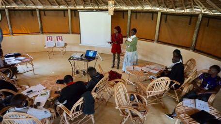
 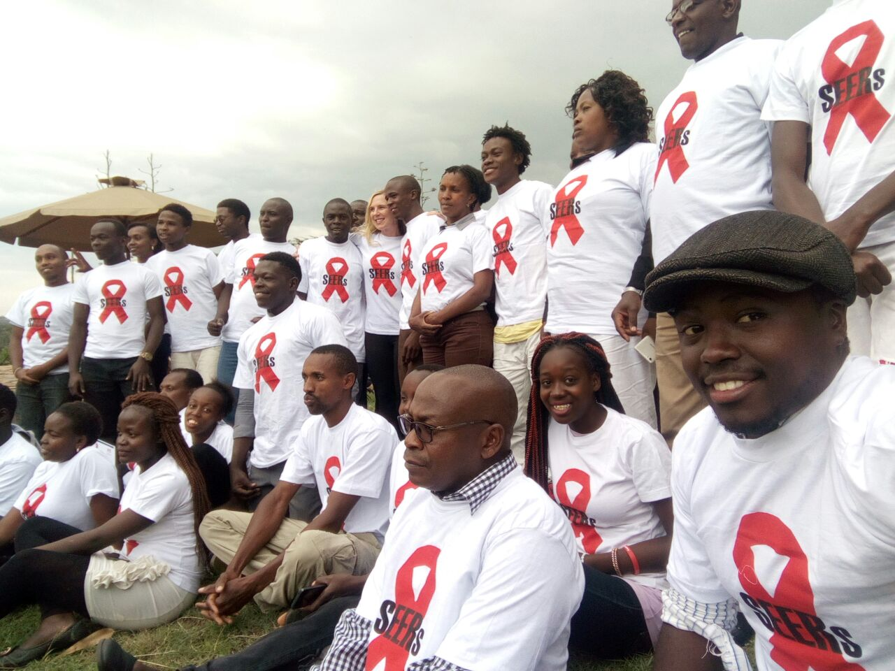
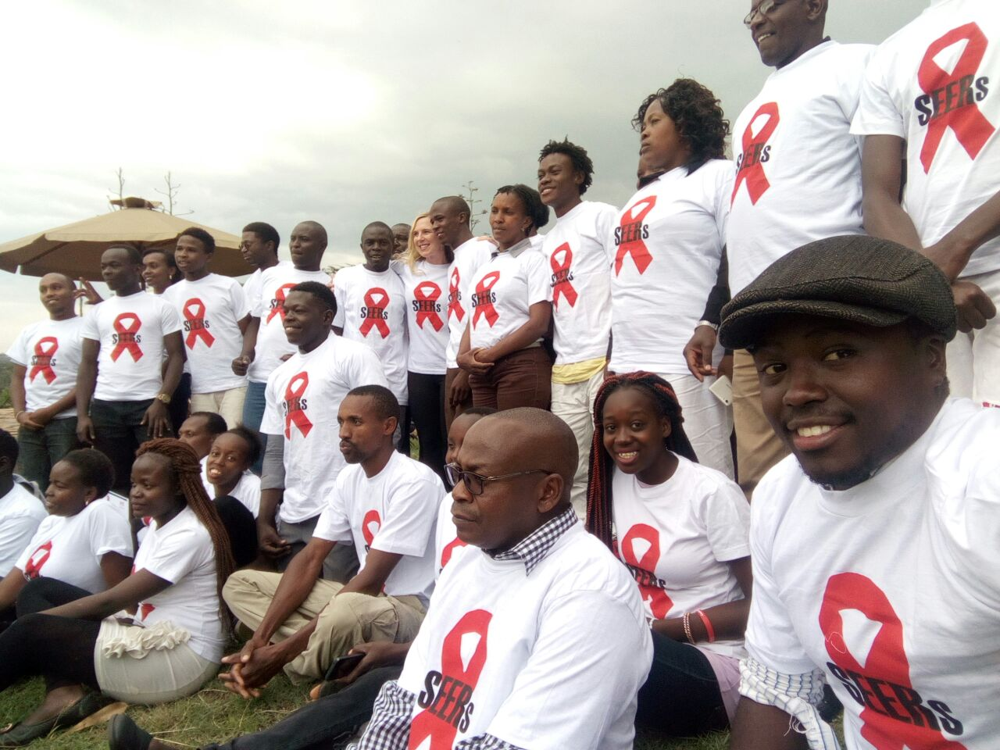

 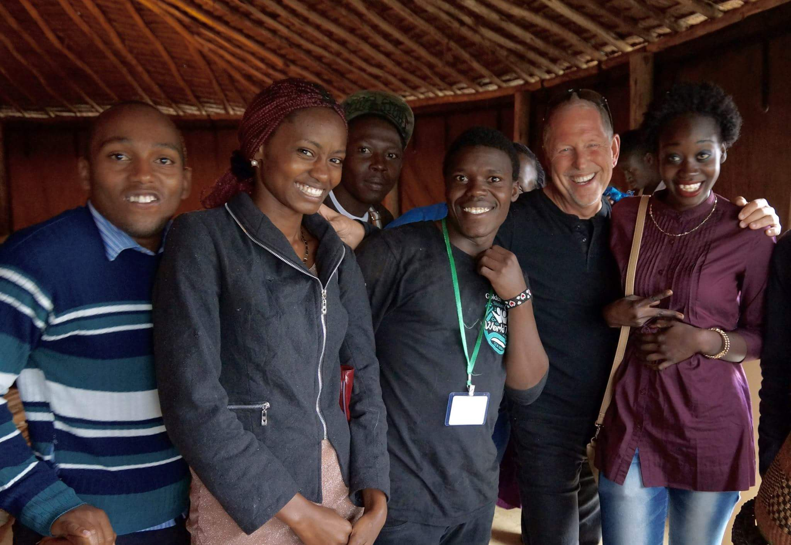
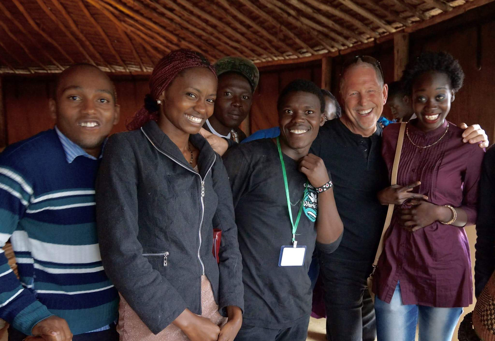
 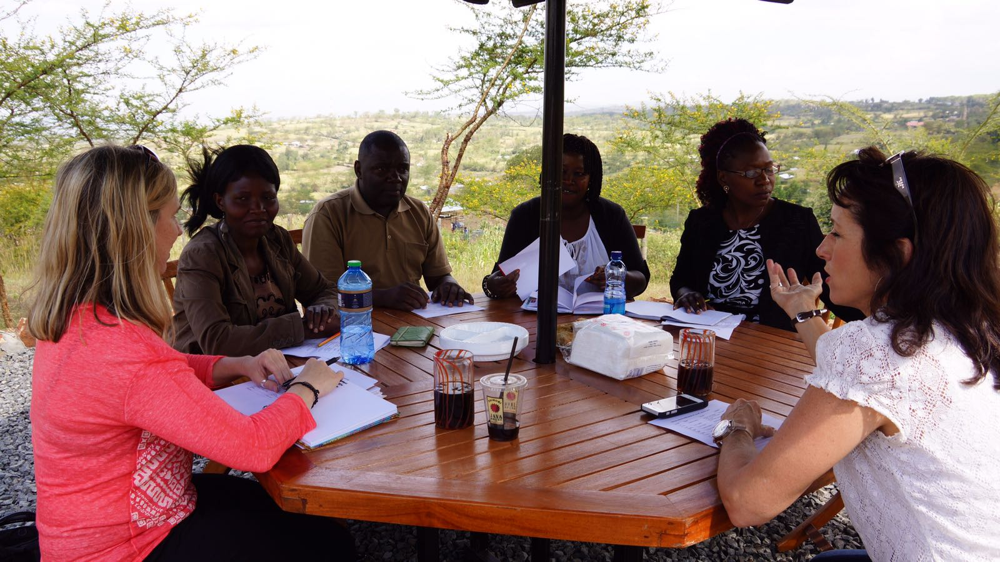
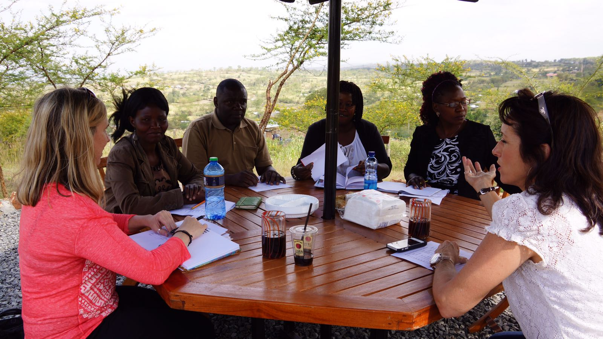
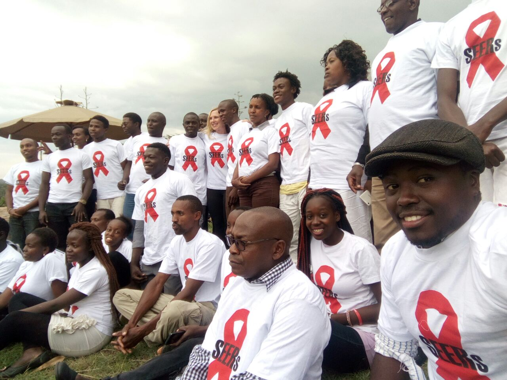
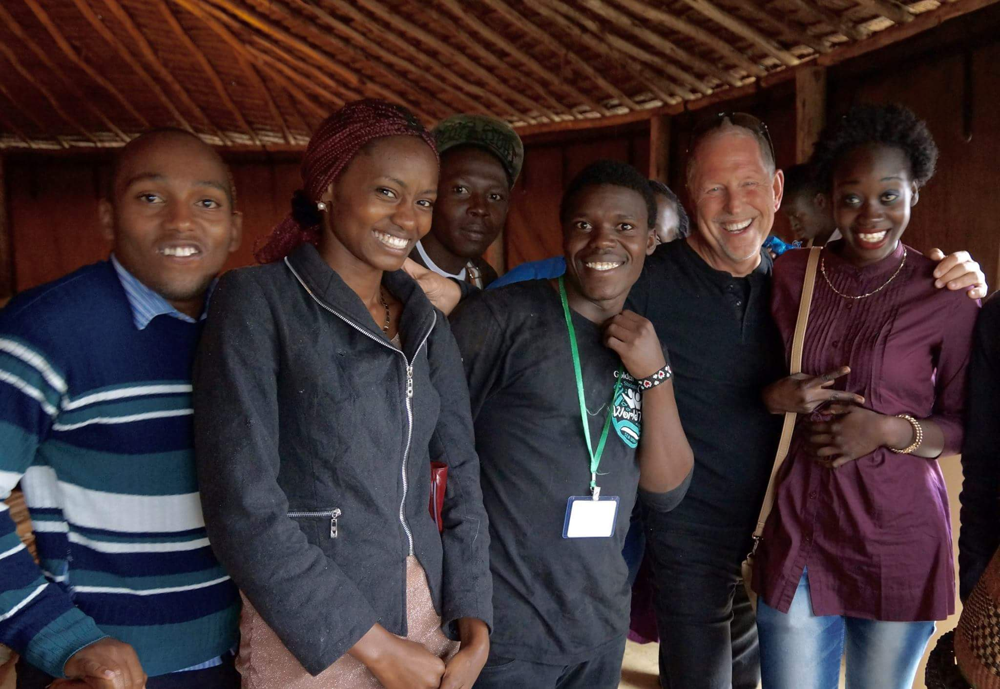
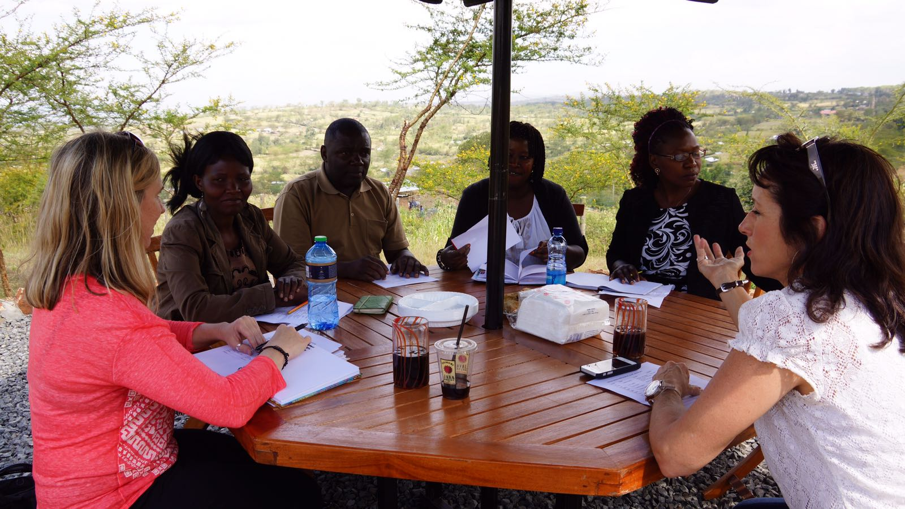
The HIV SEERs Project is a global community-based participatory research project designed to reduce HIV stigma among youth, which is a known barrier to HIV testing and treatment. HIV continues to be a very real problem in the United States and across the world, particularly in low- to-middle incomes. For example, Sub-Saharan Africa carries 70% of the disease burden of HIV. HIV disproportionately affects minorities and the poor, and youth are at significant risk for contracting HIV. Approximately one in four new HIV infections is among youth aged 13-24. Understanding that HIV is a global disease requiring global solutions and with initial funding from a Pediatric HIV Global Research Grant, Dr. Chenneville designed the HIV SEERs Project as a means by which to educate and empower youth to create sustainable change within their communities.
Mission Statement
Vision Statement
In July 2016, Dr. Chenneville traveled to Kenya where she completed a train-the-trainers workshop on the HIV SEERs Project. She trained four teams comprised of approximately 30 adults and youth ages 13-24, many of whom are HIV positive and/or are personally affected by HIV. Since the training, the teams have delivered the program, collectively, to over 2,000 youth in local schools and churches in the city of Nakuru. The program involves 4 components:
We are very delighted and inspired to be part and parcel of this noble idea of SEERS to serve humanity. Personally I thank you most sincerely for giving me this opportunity to be in the program. General comment is that people are happy they need to be educated and informed, this is the start of a journey to serve humanity. Thanking you all in advance looking forward to move SEERS to greater levels as we serve humanity. With warm regards, I am RAPHAEL
The teams here are doing big task and people are now getting to know about SEERs. This was timely. Thank you for loving the people of Kenya. Thank you for loving us. -Tony
I would like to thank all my colleagues, more so members of my team for the cooperation and spirit of togetherness you gave. I believe we are moving towards making the world a better place.
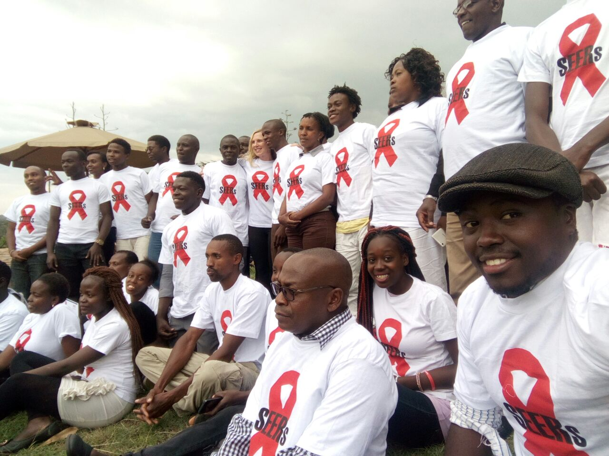
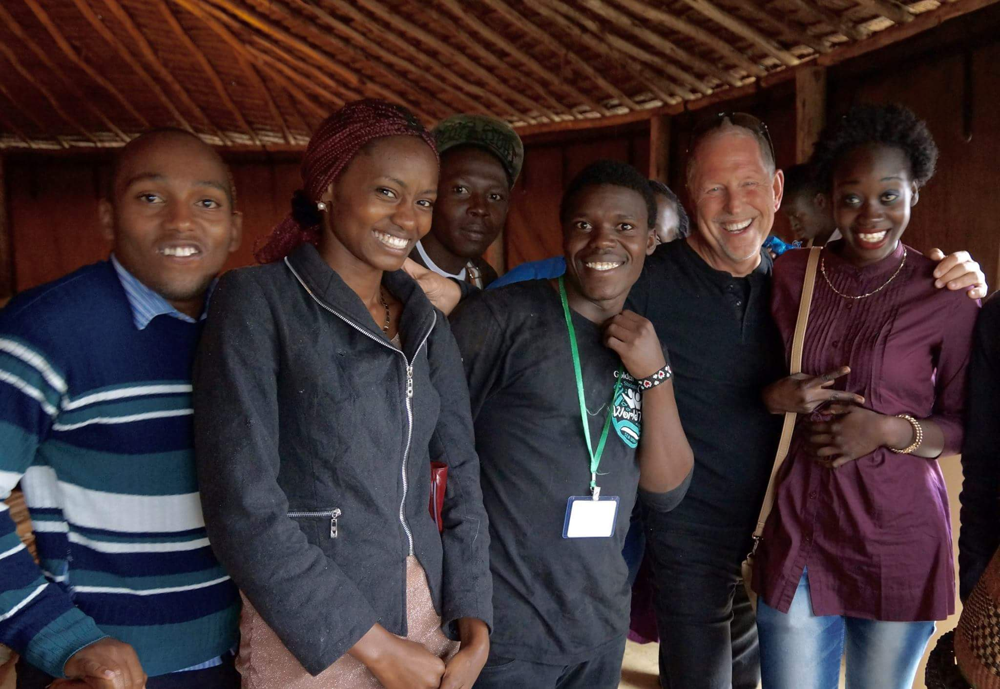
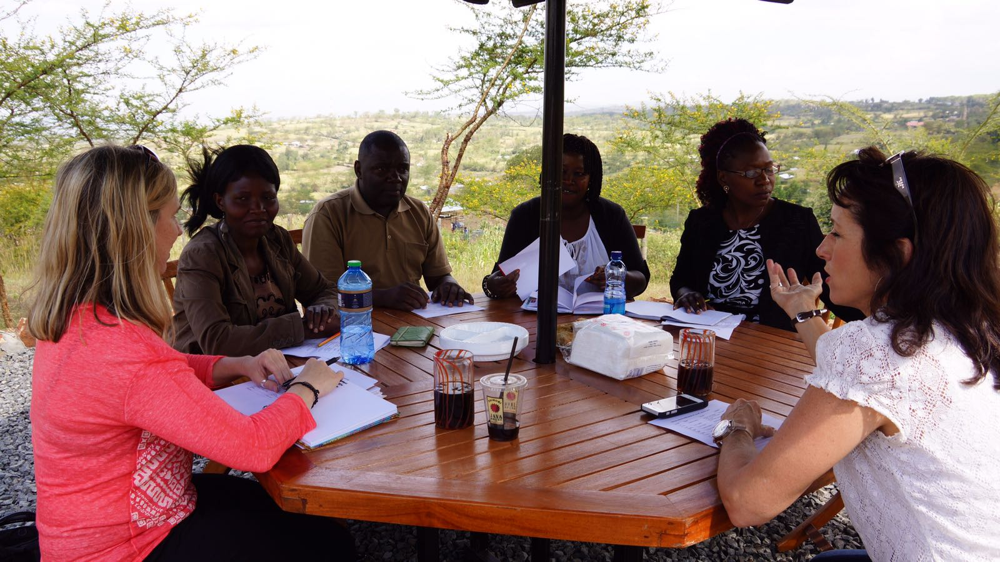
Dr. Chenneville is collecting data to document the impact of the HIV SEERs Project with the hope of obtaining federal funding to not only expand the project in Kenya by helping teams to further mobilize and create change within their community, but also to replicate the project in other communities and countries, to include the United States. The long-term goal of the HIV SEERs Project is to develop an HIV youth ambassador program whereby youth from across the world can come together to develop and deliver cross-cultural peer-led HIV initiatives. The HIV SEERs Project is built on the belief that we can empower youth with and without HIV to join together to end AIDS. Currently, Dr. Chenneville is seeking bridge funding to maintain the HIV SEERs Project in Kenya while she seeks federal support to realize the long-term vision of this initiative.
For more information about the HIV SEERs Project, please contact Dr. Tiffany Chenneville at 727-873-4584 or chennevi@mail.usf.edu. Dr. Chenneville is an Associate Professor of Psychology at the University of South Florida St. Petersburg. She has been conducting HIV research for over 20 years.